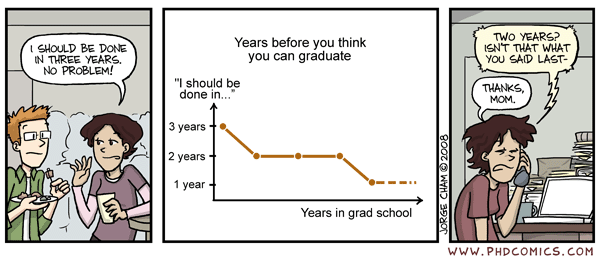

Setting Expectations for your Project
By Matt Williamson in academicLife
July 10, 2025
One of the hardest (both technically and emotionally) parts of academic life is knowing when something is “good enough” and how long it will actually take you to get there. For undergrads, this challenge is (slightly) reduced because coursework tends to have rubrics (to let you know what “good enough” looks like) and deadlines (the point at which, whether you like it or not, the thing is done). After undergrad, things get a little trickier. If you’re working outside of academia, there are likely to be deadlines, but little information on what is “good enough” (until your annual performance review comes through). If you’re continuing on into graduate school and academia, you may still have deadlines imposed by your program (though you’ll likely find these are “recommendations” and not always well aligned with your project), but there is very little information on what constitutes “good enough”.
Part of this is by design, your job is to advance knowledge. To learn something we didn’t know before, possibly by trying something we’ve never done before. That makes it hard to create any sort of specific rubric. It also, sort of and in a psychologically manipulative way, keeps you from doing work aimed at satisfying an arbitrary “bar” rather than pushing yourself to do all that you can. Leaving that last bit aside for a later day wherein I question all of the systems I’ve been a part of, I thought it might be helpful to spell out how I think about the process and give some attempt at justification for why I think about it this way1.
Complete

Whether you’re working on a paper for class, a manuscript for submission, or your entire thesis: the (first) goal is to have something that is “complete”. In my mind, this is a document that has all of the pieces of the argument (even if some are a little shaky or disjointed) that the paper is trying to make. It has an introduction that tells me why this matters, methods (if it’s an empirical paper) that describe what you did and why you did it, results with figures, tables, and captions (even if they’re preliminary), and a discussion that puts your work back in conversation with the broader literature.
A “complete” draft allows me (or other advisory reviewers) to be able to see the entire picture of where you’re trying to go so that they can offer the kind of substantive, high-level feedback that can help you figure out which places in your argument need clarification, which pieces might be extraneous, and whether there are other literatures you should be considering in your introduction or discussion. To get that sort of feedback, you need to make sure that grammatical mistakes are mostly cleaned up 2.
A “complete” draft does not have to be perfect (and you shouldn’t expect anyone to think that it is… yet)! There might be parts of your argument that need refinement, or maybe you’re missing the perfect citation for a few key points. Your figures might not be pretty (or you might be trying a few more analyses). Your discussion might be more of a retelling and justification of what you did than a true conversation with the broader literature. That’s ok!! It’s also not a rough first draft. It should be a professional representation of your work and the thought you’ve put into it. It should make it clear to the reader that you’ve thought carefully about both your work and the fact that you are asking someone else to give their time to give you feedback. Beyond that, it’s a demonstration that you can take a project from beginning to end (ideally by an agreed-upon deadline). These (professional presentation, managing deadlines, complex higher-level thinking) are the sorts of things I can highlight in recommendation letters for jobs – regardless of the sort of job you’re hoping to get when you finish.
Competent
Ok, you’ve got a project that is “complete”, but how do you know when it’s ready for the next step? I think of this as the “competent” stage. It’s ready for others who are less connected to the work to get a chance review it. In my mind, a “competent” document has a clear, cohesive, and tight argument that sets up the research question(s). The methods are expressed clearly and concisely with an eye towards reproducibility (but see this blog post by Stephen Heard). The results are final (no more analyses!!) and articulated so that their relation to the research questions are clear, with figures and tables that are well-formatted, consistent, and have useful captions. Finally, the discussion summarizes the work you did, highlights how that work fits into existing thinking about the research questions, identifies places where the results suggest a new line of questioning, and (maybe) some concrete applications to the motivating problem3.
A “competent” dissertation, manuscript, or class paper is one that is ready to be graded (if it’s a class paper), defended (if it’s a thesis), or submitted to a (probably moderate-impact) journal. For many folks, this is probably “done” (subject to addressing reviews) and so it’s worth thinking about how to make sure that this version of the document helps advance your career. If you are thinking about continuing on for a PhD or applying for post-docs, I think a “competent” document should (in addition to the grammatical/rhetorical advice above) demonstrate:
Your ability to develop an interesting research question grounded in existing literature
Your ability to select and execute appropriate methods to address that literature
Your ability to place the significance of your results in the context of existing knowledge
It doesn’t have to be earth-shattering per se but it should demonstrate that you can actually do research and are ready to continue on to the next step in your career. In my opinion, if you are planning to go into industry (whether that’s NGO’s, for-profit, or government) it’s probably more important to demonstrate your knowledge of real-world contextual issues than it is to ground everything in Theory.4 Regardless of which path you are choosing, a competent product needs to demonstrate your technical skills and your ability to communicate those skills clearly to an audience that probably hasn’t thought about this as much as you and may be less convinced that they should care about what you’ve done. Solid arguments, compelling figures, clear writing (minimal jargon, no tortured, five-clause sentences), and professional presentation are key!
Competitive
It’s no secret that the academic and the environmental job market is tough right now. Trying to combine the two might be even tougher. That said, it’s tough for (at least) two reasons that are worth considering in the context of trying to “finish” a project or product. One reason it’s tough hasn’t changed - the job is hard! If you’re hoping to be an academic, you’ll be asked to keep doing research, developing and delivering classes, and managing your small unit within the much larger bureaucracy of the university. If you’re hoping to work in industry, you’ll be asked to manage multiple projects probably focused on very different topics or geographies while (hopefully) overseeing a team that helps you move all of those projects forward. You’ll be responsible for many of the same administrative tasks an academic is asked to do, but typically at a larger scale (either in terms of budget or complexity). Finding someone who can be simultaneously a creative problem-solver and an organized project manager is hard!5 And many organizations struggle to figure out a hiring process that actually lands that person.
You can do things to help make sure that you stand out above the noise!!
Leaving aside the more existential challenge, the practical reason it’s currently hard is that a) there are more folks graduating with PhDs now than at any time in recent memory6 and b) funds for research and environmental work are limited; there’s more work to do, less to do it with, and a lack of shared vision about what those resources should be devoted to. These are not things you can fix on your own (probably, but maybe you’re better than me), but you can do things to help make sure that you stand out above the noise. That you are distinct from the ever-growing cohorts of university graduates. That you are a person a university or organization sees and says “I know we don’t have a ton of resources, but those resources need to to go THEM”.
This is why I ask students to think a bit beyond what it means to be “done”. I view your time in the SPASESLab to be the first (or early) step on a path towards a career fulfills you and lets you have the life you want. I make the assumption, that because you are here, some part of that career parallels the work that we do, and I don’t know many people that aspire to miserable jobs. If those things are true, then we should think about how to make sure that “done” describes your project, but not your journey towards that career! Given the two issues above, that means we need to think about what it means to be “competitive”.
One place you can think about making yourself competitive is in your choice and crafting of research questions. In my opinion, a competitive research question leads to results that are relevant beyond just the system you’re using to study them. This might mean casting your research in light of a seemingly broadly applicable theory (or a tension between 2 or more of those). It might also mean casting your research in light of a public problem that spans multiple spheres or sectors.7 A research question that is relevant beyond it’s initial focus is helpful for folks that want to be academics because it signals that you have the potential to create a fruitful research agenda beyond the thing you are studying right now. Similarly, if you’re hoping for a job in the environmental field, it’s unlikely that you’ll be asked to do just the “one thing” that you became an expert in during grad school - your research question is an opportunity to convince an employer that you’ve already been thinking about a lot of the things they might ask you to do.
The other place that I think can help separate you from the pack is in your choice and execution of methods. To be clear, I don’t mean that you have to be using the most complex, cutting-edge, AI-driven model in your research. Analysis fads come and go8. That’s not what I mean. Instead, I mean that your methods section illustrates a) that you are well-versed enough in contemporary analysis to justify your choice and anticipates critiques that folks that use alternative methods might level and b) that you understand what’s going on “under-the-hood” of whatever statistical software you are using[^this is true for qualitative folks as well. There are a growing number of AI-assisted coding platforms, if you use one you should be able to demonstrate that you understand what it’s doing]. You can also demonstrate methodological skill by presenting your results specifically in the context of your research questions rather than simply a series of summary tables or figures. Demonstrate that you know how to interrogate your model to get the answers to the questions you actually have. And better yet, demonstrate that you know whether or not you can trust the answers it gives you.
I think the previous advice is generally applicable regardless of your career choice. Employers (whether academic or industry) want to know that you know what you’re doing and better yet, that you are able to learn new things and execute them with a high level of skill. For some jobs (especially in industry), though, the ability to be methodologically flexible while still being robust is critical. This means that to be competitive, it’s probably not enough to demonstrate skills in a single analytic technique. Instead, you may want to craft your projects (and research questions) to give you the opportunity to demonstrate more than one skill. The closer each of those projects comes to the ideals above (coherent linkage of methods to questions, demonstration of knowledge regarding what the method is/isn’t, and ability to go beyond generic reporting), the more competitive you’ll be.
Parting Thoughts
I recognize that many (most?) of you do not aspire to a academic career. That’s great!! Some of my favorite professional moments came outside of my current job and I can certainly appreciate the appeal of different career paths. I focused the above discussion on the “products” you’ll work on while you’re here because they are your most immediate opportunity to demonstrate a variety of transferable skills and to meet the “minimum experience” requirements of a lot of different jobs (especially if you’ve mostly been doing school up to now). As your mentor, I have opinions about where you “should” be aiming with respect to what constitutes “done”. As a member of the graduate program, some of those are non-negotiable because of the way degree requirements are structured. You are, however, ultimately in charge of where you want to go and it’s my job to help you get there. These are just pieces of advice and/or my expectations about what’s necessary to get there. These things should evolve throughout our time together, but that can only happen if we both do our best to communicate expectations and objectives. Maybe one of you will want to write your own version :)
PostScript: Wait! What about rough(er) drafts??
I know, I skipped over that… I try to get mentees to write as often and as much as possible. First drafts, no matter how rough, are key in getting to Complete, Competent, or Competitive. People can’t help you see what needs to be done if they never get to see the document until you think it’s finished. That said, it’s also important to remember that asking for feedback is asking for someone’s time and you don’t want to waste that. If you’ve got a ways to go, but want feedback on something specific, tell your friendly reviewer that. Better yet, give them an idea of what kind of feedback would be helpful. “What do you think of this?” begs someone to spend enough time trying to read something to be able to offer a complete thought. You can probably give them a little more to go on than that. Also, remember that in the age of spell-check, AI-grammar checkers, etc, you probably don’t want to use someone’s time for that kind of review. Especially because the more time someone spends editing those sorts of things, the less time they can spend actually thinking about your work!!
I haven’t been an academic my whole life (at least not occupationally). This advice comes from some sense of what it takes to get jobs at agencies, NGOs, or academia. Admittedly, this experience is largely in the conservation field and is limited to my own experience and those of colleagues I’ve been lucky enough to work with over the years. Your mileage may vary, but if you’re wondering what I expect, this is the best version I’ve got so far↩︎
fun fact: lots of typos, complex sentence structures, and incomplete thoughts give us an easy out to focus on those small things rather than making sure the ideas are solid. While this sort of feedback is often easier to remedy than the conceptual comments you are aiming for, it is also not a great use of anyone’s time and makes it more likely that you’ll have to go through more drafts to get to actually useful feedback.↩︎
I’m a little hesitant here because this is often the place where we go horribly wrong. Either making recommendations that are implausible/impossible for practitioners to deal with or offering platitudes like “more research is necessary” as a way of avoiding any concrete statement about what we “should” do. When done well, this can be a really important part of the document, but it’s hard to do well and so I’m not convinced it has to be part of a “competent” draft↩︎
That said, if you need a publication to be able to move on to the next step, you’ll probably still have to demonstrate some knowledge of the existing scientific research and general thinking on your topic.↩︎
so is being that person↩︎
this is not to say that there are necessarily more great researchers! There are lots of incentives for universities to enroll and graduate students, economic shifts have led to folks who would have joined the workforce earlier staying on to complete advanced degrees, oh… and pandemics. The pool is bigger, but the skillsets and preparation seem much more uneven↩︎
like ideas that help save species rather than just a species, information that improves policymaking as a process rather than tweaks 1 piece of existing policy.↩︎
I have thoughts on some that I wish would leave↩︎